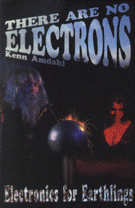

There are no Electronsby Kenn Amdahl
publisher: Clearwater Publishing
Non-fiction (?), 322 pages | 
(book cover art, Copyright ©1991 Kenn Amdahl)
Used with Permission. |
Return to the Book MenuPrevious|Next
Description:
An allegorical presentation of electricity and magnetism.
The author uses "Greenies", ducks, and buffaloes to explain how circuits
and electrical devices work. You will be able to build a radio station
from household materials (and a trip to Radio Shack).
Recommended for:people interested in the way electronics
work, students with an active sense of humor and of imagination.
Did-you-read questions:
Deadline: February 1, 2005.
These should be easy questions, but you should have the questions ready and keep an eye out during your reading. Each question should be answered with 1-2 sentences.
Note: these questions are not probably not the most important part of the book! Your essay will not have to cover these questions!
- Why do "Greenies" move?
- What do brick walls represent?
- An inductor stops the flow of which kind of current?
- Who is Belinda?
- What is the purpose of a transistor?
Report Questions:Deadline: Peer Review Session on February 8, 2005; paper due February 10, 2005.
You should write a 3 - 4 page essay on one of the following questions. Your essay should include examples and references to the book, unless otherwise specified. Page number references are sufficient for citing material from the primary book. If you use outside materials, cite your sources in full. If you would rather write on a different topic, you may, but clear it with Mr. Howe or Ms. Sullivan first.
- Does this book make electronics accessible to everyone?
- The author discusses basics as well as some more advanced material, such
as diodes, self-inductance, and transistors. Considering how electricity
and electronics are heavily involved in everyday life, how much of this
material do you think should be known by the average man on the street?
Justify your answer.
- There is a very brief discussion of superconductors in the book.
Do some research, and explain several possible applications of this technology.
- The idea that there are no electrons, just little Greenies, sounds pretty
ridiculous at first. But as the author points out, nobody has ever seen
an electron.How does the model-making that the narrator performs reflect
the way science is done and perceived? Where does it differ? What are the
strengths and limitations of models?
Graphic and Presentation:
Deadline: February 21 - March 3, 2005.You will give a 10 minute presentation on both of the following:
- Convince your peers that they should (or should not) read this book. (This may include a brief summary of the book.) Give examples of what was cool or worthwhile in the book, and what you got out of it (or didn't).
- Describe a (realistic) science idea that you learned about in this book, citing information from at least 2 external sources (other than the dictionary). If you would like help choosing or understanding an idea from your book, you are invited to come talk to Mr. Howe or Ms. Sullivan.
Note: This presentation should not be just a reading of your paper!Along with this presentation, you should have a graphic that will go with it. A Power Point presentation is recommended, but if you have a special idea for a something else, such as a model, an original video presentation, or a well done drawing/ painting/ sculpture/ etc., you may do so, provided it involves a similar level of effort and polish. Speak to Mr. Howe or Ms. Sullivan first if you are considering an alternate graphic format to the Power Point.
Return to the Book MenuPrevious|Next